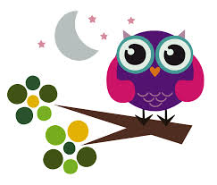

Esto es un texto con el buho incrustado, segun la wikipedia un buho es Búho es el nombre común de aves de la familia Strigidae, del orden de los estrigiformes o aves rapaces nocturnas. Habitualmente designa especies que, a diferencia de las lechuzas, tienen plumas alzadas que parecen orejas (sus verdaderas orejas se encuentran al costado de la cabeza, a los laterales de los ojos) y presentan una coloración amarilla o naranja en el iris. Debido a que sus ojos carecen de movilidad y solo pueden ver hacia delante, pueden girar la cabeza 270°.